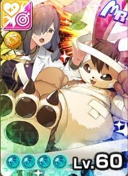
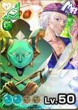

プレゼンター
冬限定
プレゼンター
黄オーラ
創造
冬限定
主血統メタルナー
副血統レアモン
基礎データ
素質
ライフ+5%
ちから0%
かしこさ-10%
命中+20%
回避-5%
丈夫さ+10%
- 素質合計
- +20%
- 最高素質
- 命中 +20%
特徴
ガッツ回復力A
移動速度B
成長タイプふつう
ヨイワルヨイ
サイズ小さい
適性データ
地形適性
砂漠C
森林C
海岸F
雪山B
火山E
- 得意（B以上）
- 雪山B
- 苦手（D以下）
- 海岸F・火山E
間合い適性
遠C
中C
近E
零B
- 得意（B以上）
- 零B
- 苦手（D以下）
- 近E
適性評価は当サイト独自の指標です。B以上は育成でSに届く適性、D以下はSに届きにくい適性として、高いランクを少し重く見て5.0満点で算出しています。
相性のいいアシスト能力
バーサーク IIは丈夫さの一部を4つのステへ回す能力。丈夫さの素質+10%のプレゼンターなら強く使える。シザースインサイト IIの命中を上げる効果は、命中の素質が+20%のプレゼンターと好相性。
-
テオスアディション II
[創造]バトル中、技デッキに編成されたオーラ技の数に応じて次の効果
1つ以上：攻撃ステータス<+10%>
2つ以上：技命中時、シールド破壊<1回>
3つ以上：[業物Lv6] -
ロボトルファイト！II
[自身黄]次の効果付与<1回>
[装甲Lv3（ブロック<-45%>、技を受けた時<15%>ずつ減少）]
オーラ技発動時、[充填Lv2]付与 -
バーサーク II
[自身黄または無機]オーラ技命中時、次の効果付与<3回>
自身の丈夫さステ<-20%>
丈夫さステの<13%>をちから、かしこさ、命中、回避ステに加算
[有利]クリ率<+8%>、クリダメ<+8%> - ▲ 丈夫さの素質+10%は、丈夫さの一部を4つのステへ回すこの能力と好相性。
-
ロボトルファイト！IV
[自身黄]次の効果付与<1回>
[装甲Lv5（ブロック<-75%>、技を受けた時<15%>ずつ減少）]
オーラ技発動時、[充填Lv4]付与
[有利]オーラ技発動時、全技ステータス<+5> -
シザースインサイト II
[自身赤または創造]次の効果を発動
[前半]残りライフが多いほど命中率上昇<最大+40%>
[後半]オーラ技発動時、必中Lv1<1回> - ▲ 素質+20%（6項目で最も高い）の命中を、この能力でさらに押し上げられる。
※新しいカードの能力から並べています。
評価解説
- 2025年12月クリスマススタフェスにて実装。クリスマステイストに装飾して飛来してきた黄オーラメタルナーのレアモン。
- 金運が上がりそうなゴールデンな見た目をしている。ツワモン覚醒するとシルバーメッキに変化し黄オーラ感ゼロに。
- ガッツ回復A、移動速度Bと純血メタルナーと同等の高水準。
- 同種の色被りにメタゾールがいるが、あちらは移動速度Eとナメクジのような速度に対してこちらはBと速め。「創造の律」持ちなので当たり前だがこちらが優秀。
- 零距離ランク5登録黄技の「閃光掌」はガッツ回復停止に追撃付与と強力で、メタルナー種にとって接近戦の要となる技。ガッツダウンもAと優秀なので零距離はこの技一本に絞りたい。
- 中距離ランク4「ツイン掌打」が固有白オーラ技「ホーリー掌打」になっており、オリジナルの命中の低さがE→B+と大きく改善され、元々のガッツ消費の低さと自身強撃付与も相まって打ちやすくそれなりに優秀な技となっている。必須レベルでもないが「ポン拳」や「すんけい」よりは使える。ロード秘伝から白技発動がトリガーとなるSSRアルカディアスやSSRライバル白凰の能力を持って合わせればより面白く出来る可能性はある。
- ランク3遠距離技「メタビーム」で相手ガッツ30固定と、「閃光掌」のガッツロックがハマれば物理的に技を撃てない状況を押し付けられ得るので相手からするとかなりイヤなコンボとなるだろう。
- 創造、黄オーラ、メタルナー種という括りだと火力の伸ばしにくさが現状のネック。バトルでは「レッドアディション」「本当の罪ってのは…」などの汎用的な火力スキルをロード秘伝で積んで上手く補強したい。
- もう一つくらい優秀な登録技が欲しかった気がする。メタルナー種の救世主にはなれず。創造の師匠が来たとき化けるかもしれない（202604現在）
おすすめ編成
おすすめ編成①

サフィン

ミルキィ
メリオダス

リストン

アウフィエル
レンタル

エムロード